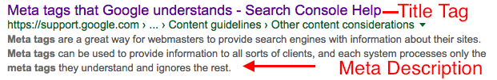

SEO Crash Course for Beginners

18 min read
What Is SEO
Have you ever wondered how Google decides which websites show up at the top of the Search Engine Results Page (SERP) well it is based on of a number of algorithms based off of rank, and optimizing a website is what Search Engine Optimizing (SEO) does through strategies, tactics, and techniques? While it might sound simple Google has over 400 updates a year and research and testing are the only ways to stay on top of these updates. There is also the need to understand user intent, though keywords so you can have your content reach your audience.
To put it simply the SERP is like an iTunes chart of the internet, websites rank higher on the search engines dependent on how ‘good they are’ and SEO is the practice of making them get up there. So when someone searches for “volunteering in my area” the most popular site will be first. SEO tries to get your content above the fold.
Making sure the right people find you at the right time is what SEO is really all about.
Reason Why You Need SEO
- 93% of all online experience start with search engines.
- 51% of traffic to business websites comes from organic search results. Paid search ads only accounted for 10% of traffic.
- SEO outranks PPC ads, social media marketing, and email marketing when it comes to ROI.
- The top organic search result gets 33% of organic traffic, while only 10% of users make it past the first page of Google.
So search optimization is really important reaching your audience and getting them to your site. More importantly, though it is what the top site on the internet is doing, and something that will give you an edge and another channel to reach your audience.
Getting Started With SEO
The first thing you should do is google your site to make sure all the pages are indexed. To do this search site:yoursite.com and it will show which pages are indexed. Depending on your results there are some simple steps to make sure that every page gets indexed.
1. Make sure that Google Analytics (GA) and Search Console are set up
- Google Analytics and Search Console on its own will not help you index your site, but a number of things that we will be using the console and you should always be tracking users on your website
2. Look at the robot.txt file
- The most common mistake that can be made here is having
User-agent: * Disallow: /This tells the Search Engine to not crawl your site because/means root directory. So by getting rid of/and using Nonstandard extensionallowed:you will make sure that the search engines will crawl your site.User-agent: * Allow: / Disallow:
3. Sitemap
-
The first thing that you should do is make sure you have a sitemap in both
sitemap.htmlandsitemap.xml. Thesitemap.htmlwill be added to the footer of each page, while thesitemap.xmlwill be upload into google search console. -
Second, you will upload your
sitemap.htmlinto Search Console by going to the left-hand menu Crawl > Sitemaps in the upper right side there will be a ADD/TEST Sitemap add thesitemap.xml
4. Local Indexing
-
This can only be done if you have a physical location
-
Make sure that you claim your Google Business
-
Once you set it up all you need to do is include the following:
-
Add a long, unique description that’s formatted correctly and includes links.
-
Choose the correct categories for your business.
-
Upload as many photos as possible.
-
Add a local phone number to your listing.
-
Add your business address that’s consistent with that on your website and local directories.
-
Upload a high-resolution profile image and cover photo.
-
Add your opening times/days (if relevant)
-
-
Include NAP (Name, Address, Phone Number)
-
Make sure that you have your full NAP across your whole website and it has the same details/format.
-
You will also need Local SEO factors that help with targeting, and will be discussed in Technical SEO and On-Page SEO.
-
While there has been a lot to do to just get your website ready for SEO Digital Roots has the experience that will make sure that your content will not have any roadblocks on it’s way to your audience
Keyword Research
While getting your website index requires code make sure it targets your audience is all about content and the keywords that you use. Google is very good at understanding how different word is related thanks to Latent Semantic Indexing (LSI), which means Google knows flat and apartment are interchangeable. Despite rumors to the contrary, keywords are still very much relevant to SEO and picking the right keywords to optimize your site around is a critical part of SEO.
The most common mistakes for Digital Marketing also apply to SEO keyword research: - Only doing SEO keyword research once - Not updating and expand their SEO keyword Lists - Only going for the competitive SEO Keywords leaving gains in other areas
The main thing to remember is that Keyword research is an ongoing process, and you have to stay up to date on the best practices for SEO Keyword Research and content strategies. To get started with research start with AdWord’s Keyword Planner while it will give you traffic only ranges which are: 1-100, 100-1k, 1k-10k, 10k-100k, 100k-1M. This gives you an ok idea of what might be worth targeting, but make sure you look at the competition to see if there is any possibility for you to rank in the first place.
To have a better chance of ranking and reaching your target audience, we use Long-Tail Keywords. A long-tail keyword is more target because they are aiming to answer more specific questions. To start SEO Long-tail Keyword Research we look at the search funnel meaning we see what the scope of the search results ie. Local, State, National. The best tool that I have come across for long-tail keyword research is Keyword Tool and Keyword Spy, but there are several options.
Links (1st or 2nd most important ranking factor)
Outbound Links
- Outbound Links can help you rank better because they work like citations, but make sure you only have 1-3 outbound links because it can seem like a spam quality.
Inbound Links
- Inbound Links are the most important because they are viewed as a measure of how trustworthy and popular your website is. It also helps with determining what type of website you are and for Local SEO your location. The key is to get likes to point to your website and there are a number of to achieve this.
5 Link Building Techniques
- Micro-sites - They are fun and great ways to attract links some time they will even link back to your main site. Even for the ones that don’t, it will give you at least one moderate to high-quality link in a relatively short time.
- RSS Feed - If you have a blog or press releases, then a blog is a great way to get links. Make sure you burn it at Feedburner.com. For linking build it’s simple sites will scrape your content (stealing). When they do make sure you get a backlink by including links in the content back to your site.
- Social media - Both Reddit and LinkedIn give backlinks. With Reddit, they will give a backlink to any link that has 5 upvotes, and LinkedIn will do the same based on an unknown number of leaks.
- Buy Existing/Abandoned/Expiring Domains - Older domains still have authority and can be a quick way to create a few link assets in a short time. by going to archive.org and repopulating it with some of the old content that got the most links. Also buying an existing website is more expensive, but it also has the most current value.
- Organizations - There are a number of organizations that will give quality backlinks, and while most of them will cost you some money. So the examples are your local Chamber of Commerce and Local Civics Leagues.
Content (1st or 2nd most important ranking factor)
Often you will here Content is King for SEO, and that is true to a point. The key to good content is that it answers the user’s question, and can be done through telling a story or by presenting a report. Make sure you use your keywords and Local SEO will want to have the location used as often and naturally as possible The thing to remember is that there are 2 key parts to content for SEO
Quality
The major question you should ask your self when you are writing content is there real value, something that is useful, that is unique, and of substance to visitors. The other things that you should consider are: make sure it is optimized and is your content linkable.
There are a number of ways you can build link-worthiness into content planning:
-
original research/data;
-
expert opinions/quotes;
-
collaboration; and
-
unique imagery/video.
When optimizing your content there are some basic rules that you should obey:
-
Include your keywords where they feel natural never stuff keywords because there is no optimal keyword destiny.
-
Keep your post above 250 words and ideally at least 350 because if you don’t have that much then you probably don’t have a page. Consider combining pages because content under 250 can cause significant issues.
-
Also make sure that you use the word associated with your keywords. If you have a page on “A complete history of Maryland” then Google would expect you to write about Annapolis and Baltimore.
Freshness
Fresh content is often preferred by Google and-and can be done by publishing new content or updating old content.
-
Freshness score will initially be based on its inception date, which decays or time. This means initially content might rank high, but over time it will decrease. An example of this breaking news or events that are ongoing.
-
The amount you update your content can also influence freshness. When you do update your make sure it is a major update because Google may choose to ignore small changes and care the most about core content. Less important content includes:
- JavaScript
- Comments
- Advertisements
- Navigation
- Boilerplate material
- Date/time tags
-
Best Practices
-
Create new content regularly.
-
When updating, focus on core content, and not unimportant boilerplate material.
-
Keep in mind that small changes may be ignored. If you’re going to update a link, you may consider updating all the text around the link.
-
Steady link growth is almost always better than spiky, inconsistent link growth.
-
All other things being equal, links from fresher pages likely pass more value than links from stale pages.
-
Engagement metrics are your friend. Work to increase clicks and user satisfaction. If you change the topic of a page too much, older links to the page may lose value.
-
Updating older content can work amazingly well when you earn fresh links to the content, and updates authoritative content. And the goal shouldn’t be to update your site for the sake of updating isn’t going give the results. A good rule of thumb is that you should only update content if you do it in a timely manner that benefits users, with an aim to increase user engagement and help get fresh links.
Technical SEO
While Technical SEO isn’t the main ranking fact it will help with metrics such as bounce back and load time. The best time to implement these is before the launch of the website.
Page Speed
While page speed isn’t a ranking factor, it has a large effect on usability. The best example is the often talked about Amazon Study where they found out that for every 100ms they lost 1%, put into simple term no user will wait 3 seconds or more and the user won’t much longer for mobile sites.
-
Images add the most to file size and will often be the most important thing that you will have to change to optimize speed. The easiest way to do this is by trying to reduce the file size as much as possible without reducing quality. The best way to optimizing images is to use
srcset. -
Content Delivery Network (CDN) is another way to speed up your sites load time. The way CDN works is to minimize the distance between the visitors and your website’s server, a CDN store a cached version of its content in multiple geographical locations (a.k.a., points of presence, or PoPs). Each PoP contains a number of caching servers responsible for content delivery to visitors within its proximity. Word of Warning CDN take more effort and attention if you use a Content Management Systems because of Caching
On-Page Factors
If you search “on-page SEO” into Google, Moz will tell you—through a featured snippet—it is “the practice of optimizing individual web pages to rank higher and earn more relevant traffic in search engines. On-page refers to both the content and HTML source code of a page that can be optimized, as opposed to off-page SEO which refers to links and other external signals.”
Title Tags
| Title Tags are the most seen on page element because it will show up in the SERP as the blue link, in the tab of the web browser, and is a place for keyword placement. The most common layout is **page title | brand** with a character limit of 70 characters before showing ellipses. |
Meta Descriptions
Are one of the most important on-page factor, but not for SEO. The reason why it is so important is that goo copy can help reduce you bounce back rate because they know what to expect when they click through. For desktop, users will see up to 200 characters, while on mobile they’ll be shown up to 172 characters. To appeal to users on both devices, keep your description between 165 and 175 characters.

Heading Tags
Your landing page or blog should include multiple heading tags, from the h1 down to a potential h6. The most important are the h1. You should never have more than one h1 tag on any page. Include multiple h2’s or h3’s as users scroll down the page. These are used as subheadings.
Use the headings to represent the different sections of the page. You’ll notice the impact from both an SEO standpoint and a usability standpoint
Schema
- Schema Defined by Schema.org: Schema.org is a collaborative, community activity with a mission to create, maintain, and promote schemas for structured data on the Internet, on web pages, in email messages, and beyond. Schema.org vocabulary can be used with many different encodings, including RDFa, Microdata, and JSON-LD. These vocabularies cover entities, relationships between entities and actions, and can easily be extended through a well-documented extension model. Over 10 million sites use Schema.org to markup their web pages and email messages. Many applications from Google, Microsoft, Pinterest, Yandex and others already use these vocabularies to power rich, extensible experiences. Schema.org is sponsored by Google, Microsoft, Yahoo, and Yandex.
What this means is Schema allows the 4 major search engines to better understand what content you have on your website and in some case will show items (ranting and snippets) in the SERP
For Local Search you will need Schema to add NAP, hours, and rating so that they can show up in the SERP. Keep in mind the order of NAP doesn’t matter as long as it is the same throughout the site.
Mobile Friendliness
Google is moving to Mobile First Indexing this means that your website should follow a mobile-first approach. The key items that you should be focusing on: - Make sure that the website is fat finger Friendly - This means that you should be able to clearly use navigation elements and avoid missing clicks. - Make sure your content (images, videos, and tables) - There are a number of ways to do this for each item. For images make sure that you use srcset and for video sure that the screen and navigation both resize:
-
There are a number of jQuery libraries that will take care of it for you
-
Use
data-hintandcontentin CSS and HTML method
Conclusion
SEO is a major pillar of your digital footprint and take time to produce strong results, but will have a longer lasting effect unlike PPC campaigns when they’re done the benefits go with them. That’s why at Digital Roots make sure we are using the best tactics at the beginning of our development so our customers don’t lose any ground.